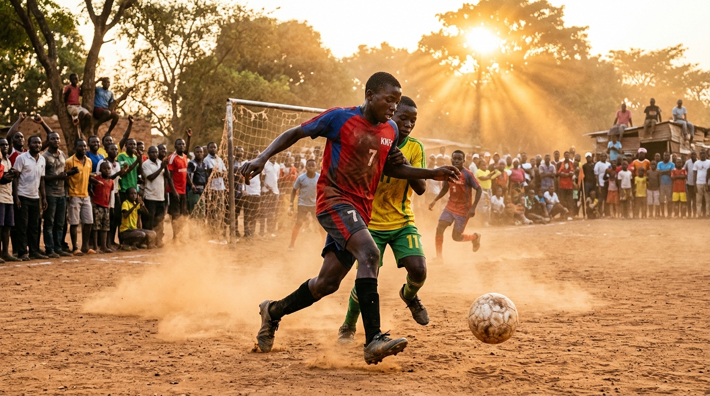

Youth Football
Lilongwe Grassroots Youth Football Program Expands Across Central Districts
A community-driven athletics initiative partnering with local schools is providing coaching, football kits, and academic tutoring for over 600 young players across Area 25, Kawale, and Mtandire.